pacman::p_load(tidyverse, sf, sfdep, spdep, tmap, knitr, DT, kableExtra, cluster, factoextra, purrr, Kendall)Take-home Exercise 02
Background
Urban mobility is vital to urban planners as they describe how goods and people move within and between cities through all kinds of transportation (e.g. walking, vehicle, bicycle, etc). With good urban planning, proper resources to build roads and . can create smart, efficient and sustainable networks. This led to reduced congestion in roads, reduce carbon emission and smooth travel through roads.
The emergence of autonomous vehicles and shared mobility services ash further driven the evolution of public transportation systems. Especially as digital urban infrastructures dataset become available in the internet, we can track for movement pattern across space and time. With this, we can get better understanding and make informed decision to allocate resources.
Objective
In this hands-on, we’ll be analyzing LMSA (Local Measures of Spatial Autocorrelation) to identify specific locations within a map that show significant spatial clustering of similar or dissimilar values. Then, we’ll look at hotspots (high values clustered together), coldspots (low values clustered together) and outliers (high values surrounded by low values, or the opposite). So we can discover local insights (mobility pattern across neighbourhoods) instead of global summary measures.
We’ll also be analyzing EHSA (Emerging Hot Spots Analysis) to complement LMSA. We’ll use space-time cube to identify and categorize clusters (coldspots or hotspots) over time. Through EHSA, we can spot for bus mobility pattern (trend) over time. In this hands-on, we’ll be analyzing geographical distribution of passegner trips in the following time period:
Weekday morning peak from 6am to 9am
Weekday afternoon peak from 5pm to 8pm
Weekend/holiday from 11am to 8pm
The Data
In this hands on exercise, we’ll be using the following dataset:
Passenger Volume by Origin Destination Bus Stops from LTA DataMall
Bus Stop Location from LTA DataMall
Master Plan 2019 Subzone Boundary (No Sea) from data.gov.sg
Load Required Libraries
In this exercise, we’ll be using the following libraries:
sf: simple features in R to encode and analyze spatial vector data
spdep: create spatial weights matrix object from polygon ‘contiguities’
tmap: used to draw thematic map
tidyverse: collection of R packages that for data manipulation and visualization
knitr: dynamic report generation
cluster: methods for cluster analysis
factoextra: provide easy to use function to extract and visualize the output of multivariate data analysis
Import Data
First, we’ll import the cleaned Master Plan 2019 Subzone Boundary (No Sea) dataset that we saved on Hand-on 2. Data preparation for this data can be found in my Hands-on 2.
mpsz = read_rds("data/rds/mpsz_cl.rds")Next, we’ll import the Bus Stop Location using st_read() and transform the data to EPSG 3414 (projected system for Singapore)
BusStop = st_read(dsn = "data/LTADataMall/",
layer = "BusStop") %>%
st_transform(crs = 3414)Reading layer `BusStop' from data source
`C:\stefanie-fel\ISSS626-GAA\Take-home_Ex\Take-home_Ex02\data\LTADataMall'
using driver `ESRI Shapefile'
Simple feature collection with 5172 features and 2 fields
Geometry type: POINT
Dimension: XY
Bounding box: xmin: 3970.122 ymin: 26482.1 xmax: 48285.52 ymax: 52983.82
Projected CRS: SVY21Lastly, we’ll use read_csv() to import the Passenger Volume by Origin Destination Bus Stops data.
odbus <- read_csv("data/origin_destination_bus_202508.csv")Data Preparation
First, let’s visualize the bus stop points in Singapore to get better understanding of the data
tm_shape(mpsz) + tm_polygons(col = "lightgrey", border.col = "white") + tm_shape(BusStop) + tm_dots(ol="red", size = 0.1)Since the visualization includes bus stops that are outside of Singapore, we should combine both geometry data and data points using st_joins.
BusStop_in_SG <- st_join(
BusStop, mpsz,
join = st_within,
left = FALSE)
names(BusStop_in_SG)[1] "BUS_STOP_N" "LOC_DESC" "REGION_N" "PLN_AREA_N" "SUBZONE_N"
[6] "SUBZONE_C" "geometry" tm_shape(mpsz) + tm_polygons(col = "lightgrey", border.col = "white") + tm_shape(BusStop_in_SG) + tm_dots(ol="red", size = 0.1)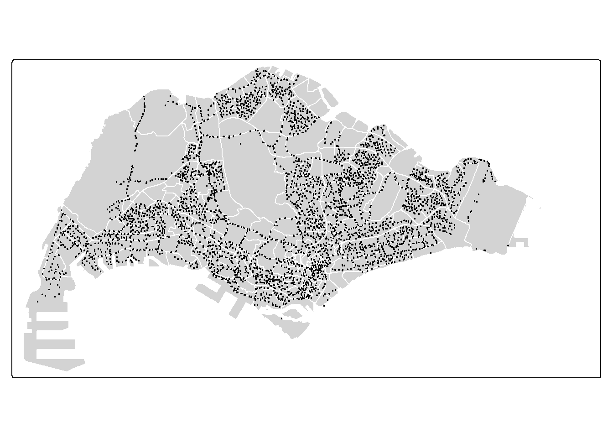
As can be seen, now the bus stops that are not located outside the map is now gone.
Next, we’ll create grid layer and take hexagon with bus stops and exclude those areas without bus stop
hexagon <- st_make_grid(mpsz, cellsize = 375, # diameter is 375 from center to edge
what = "polygon", # returns hexagon layer
square = FALSE) %>%
st_sf() # make large sfc_polygon data into sf tabular (list) dataframeSince the hexagon table only have 1 column which is the polygon data, we need to assign id to each hexagon to know which it is.
hexagon$n_collisions = #return true or false if hexagon intersect the bus stop
lengths(st_intersects(hexagon, BusStop_in_SG))
hexagon <- filter(hexagon, n_collisions > 0) # filter to only store hexagons that has bus stop
Note
hexagon$n_collisionsreturns if hexagon intersects the bus stoplengths(st_intersects(hexagon, busStop_in_SG)): st_intersections return output of geomteric cut, while this function return true or false (in numerical value; 0 means none or values > 1 meaning the total number of bus stops within the hexagon),filter(hexagon, n_collisions > 0): filter to only store hexagons that has bus stop
Next, we’ll drop the n-collisions column and create new column in the data frame to identify unique bus stop locations through IDs.
hexagon <- hexagon %>%
select(, -n_collisions)
hexagon$HEX_ID <- sprintf(
"H%04d", seq_len(nrow(hexagon))) %>% # start with 0
as.factor() #ordinal scale
kable(head(hexagon))| geometry | HEX_ID |
|---|---|
| POLYGON ((3980.038 28051.92… | H0001 |
| POLYGON ((4355.038 28701.44… | H0002 |
| POLYGON ((4542.538 30325.23… | H0003 |
| POLYGON ((4542.538 30974.75… | H0004 |
| POLYGON ((4730.038 30000.47… | H0005 |
| POLYGON ((4917.538 28376.68… | H0006 |
Preparing Trip Generation Data
Cleaning Data
Next, we’ll derive create a new variable that stores location of the bus stop, hour of the day and total trips through the bus stop.
trips <- odbus %>%
select(c(ORIGIN_PT_CODE, DAY_TYPE, TIME_PER_HOUR, TOTAL_TRIPS)) %>%
rename(BUS_STOP_N = ORIGIN_PT_CODE) %>%
rename(HOUR_OF_DAY = TIME_PER_HOUR) %>%
rename(TRIPS = TOTAL_TRIPS)
trips$BUS_STOP_N <- as.factor(trips$BUS_STOP_N) # so that it cannot be converted accidentally to numerical column
kable(head(trips))| BUS_STOP_N | DAY_TYPE | HOUR_OF_DAY | TRIPS |
|---|---|---|---|
| 84671 | WEEKENDS/HOLIDAY | 9 | 3 |
| 10099 | WEEKENDS/HOLIDAY | 13 | 31 |
| 64601 | WEEKENDS/HOLIDAY | 21 | 3 |
| 53009 | WEEKENDS/HOLIDAY | 16 | 10 |
| 80051 | WEEKENDS/HOLIDAY | 18 | 4 |
| 70031 | WEEKDAY | 14 | 1 |
Next, we’ll combine the bus stop and hexagon layer data and drop the geometry since we’ll be hexagon instead
# combine bus stop and hexagon (layer) data
bs_hex <- st_intersection(
BusStop, hexagon) %>%
st_drop_geometry() %>% #geometry will be replaced with hexagon
select(c(BUS_STOP_N, HEX_ID))
kable(head(bs_hex))| BUS_STOP_N | HEX_ID | |
|---|---|---|
| 3092 | 25059 | H0001 |
| 2439 | 25751 | H0002 |
| 241 | 26379 | H0003 |
| 2258 | 26369 | H0004 |
| 2650 | 25719 | H0005 |
| 2651 | 25711 | H0005 |
Add HEX_ID into bus trip data
We’ll also combine the trips variable with the HEX_ID (location) to finish our data preparation step.
trips <- inner_join(trips, bs_hex)Filter Data for Weekday Morning Peak
Next, we’ll filter for the weekday morning peak data and combine it back with its hexagon geometry since we also want to know where each bus stop is located and not just its ID. Since previously, we also grouped the data to aggregate the number of trips in each bus stop location, we’ll ungroup it so that we can perform analysis on the data.
weekday_morning <- trips %>%
filter(DAY_TYPE == 'WEEKDAY'& HOUR_OF_DAY %in% c(6, 7, 8, 9)) %>%
group_by(
BUS_STOP_N,
HEX_ID,
HOUR_OF_DAY) %>%
summarise(TRIPS = sum(TRIPS))
weekday_morning <- left_join(weekday_morning, hexagon)
weekday_morning_ungroup <- st_as_sf(weekday_morning) %>% ungroup()Next, we’ll also plot the trend of trips in each bus stop location per hour (from 6am to 9am).
weekday_morning_ungroup <- weekday_morning_ungroup %>%
mutate(title_hour = paste0("Hour of day: ", HOUR_OF_DAY, ":00"))
tm_shape(weekday_morning_ungroup) +
tm_polygons(col = "TRIPS",
palette = "Blues",
border.col = "grey",
alpha = 0.6) +
tm_facets(by="title_hour",
free.coords=FALSE,
drop.units = TRUE)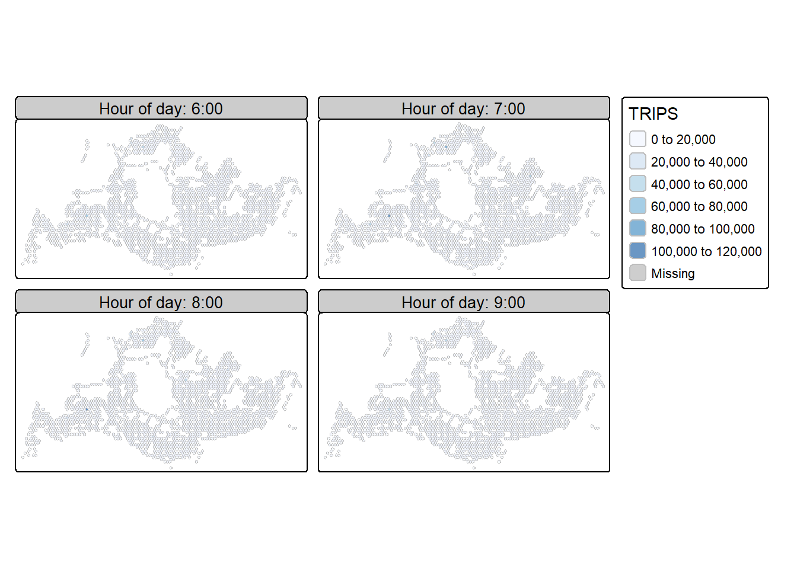
As can be seen, the range of bus trips per hour is quite big (from 0 to 120,000), with most bus location having 0 to 20,000 trips. There is one point in the north and east in which as the hour goes by becomes darker in color (80,000 to 10,000 bus trip), indicating that a lot of buses pass by or stop on those location.
weekday_morning_ungroup <- weekday_morning_ungroup %>% select(-title_hour) # drop title_hour as it was used for visualization onlyWe can also check what time of the day where there are most buses and less waiting time.
weekday_morning_hour <- trips %>%
filter(DAY_TYPE == 'WEEKDAY'& HOUR_OF_DAY %in% c(6, 7, 8, 9)) %>%
group_by(
HOUR_OF_DAY) %>%
summarise(TRIPS = sum(TRIPS))
weekday_morning_hour# A tibble: 4 × 2
HOUR_OF_DAY TRIPS
<dbl> <dbl>
1 6 5090423
2 7 8231834
3 8 7324169
4 9 4554990As can be seen, 7am and 8am have the most bus trips out of the 6am to 9am time period.
Filter Data for Weekday Afternoon Peak
Just like before, we’ll filter for the weekday afternoon peak data (from 5pm to 8pm) and combine it back with its hexagon geometry and ungroup the data.
weekday_afternoon <- trips %>%
filter(DAY_TYPE == 'WEEKDAY'& HOUR_OF_DAY %in% c(17, 18, 19,20)) %>%
group_by(
BUS_STOP_N,
HEX_ID,
HOUR_OF_DAY) %>%
summarise(TRIPS = sum(TRIPS))
weekday_afternoon <- left_join(weekday_afternoon, hexagon)
weekday_afternoon_ungroup <- st_as_sf(weekday_afternoon) %>% ungroup()
weekday_afternoon_ungroupSimple feature collection with 19723 features and 4 fields
Geometry type: POLYGON
Dimension: XY
Bounding box: xmin: 3792.538 ymin: 26428.12 xmax: 47292.54 ymax: 50243.82
Projected CRS: SVY21 / Singapore TM
# A tibble: 19,723 × 5
BUS_STOP_N HEX_ID HOUR_OF_DAY TRIPS geometry
<chr> <fct> <dbl> <dbl> <POLYGON [m]>
1 01012 H1366 17 2174 ((30042.54 30974.75, 29855.04 31083.01, …
2 01012 H1366 18 2778 ((30042.54 30974.75, 29855.04 31083.01, …
3 01012 H1366 19 1779 ((30042.54 30974.75, 29855.04 31083.01, …
4 01012 H1366 20 1303 ((30042.54 30974.75, 29855.04 31083.01, …
5 01013 H1366 17 1954 ((30042.54 30974.75, 29855.04 31083.01, …
6 01013 H1366 18 2795 ((30042.54 30974.75, 29855.04 31083.01, …
7 01013 H1366 19 1917 ((30042.54 30974.75, 29855.04 31083.01, …
8 01013 H1366 20 1430 ((30042.54 30974.75, 29855.04 31083.01, …
9 01019 H1384 17 1130 ((30230.04 30649.99, 30042.54 30758.25, …
10 01019 H1384 18 1294 ((30230.04 30649.99, 30042.54 30758.25, …
# ℹ 19,713 more rowsWe’ll also visualize the filtered data per hour to understand better the trend of bus trips in each region.
weekday_afternoon_ungroup <- weekday_afternoon_ungroup %>%
mutate(title_hour = paste0("Hour of day: ", HOUR_OF_DAY, ":00"))
tm_shape(weekday_afternoon_ungroup) +
tm_polygons(col = "TRIPS",
palette = "Blues",
border.col = "grey",
alpha = 0.6) +
tm_facets(by="title_hour",
free.coords=FALSE,
drop.units = TRUE)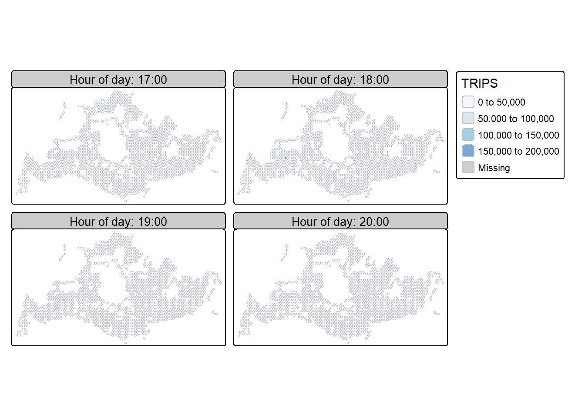
Surprisingly, we observe that there are less bus trips during this time period even though it is considered rush hour. We can also see that the same points (in the east and west) from the weekday morning peak also also have high frequency of buses stopping by this location in the afternoon.
weekday_afternoon_ungroup <- weekday_afternoon_ungroup %>% select(-title_hour) # drop title_hour as it was used for visualization onlyweekday_afternoon_hour <- trips %>%
filter(DAY_TYPE == 'WEEKDAY'& HOUR_OF_DAY %in% c(17, 18, 19,20)) %>%
group_by(
HOUR_OF_DAY) %>%
summarise(TRIPS = sum(TRIPS))
weekday_afternoon_hour# A tibble: 4 × 2
HOUR_OF_DAY TRIPS
<dbl> <dbl>
1 17 7149274
2 18 8095040
3 19 5601650
4 20 3848416As expected, on weekdays most people make trips on nearing peak hours and peak hours (5pm and 6pm), while the number starts to drop drastically on 7pm and 8pm. This also indicate that later hours have longer wait time.
Filter Data for Weekend/holiday
We’ll filter for the weekend or holiday data (from 11am to 8pm) and combine it back with its hexagon geometry and ungroup the data.
weekend <- trips %>%
filter(DAY_TYPE == 'WEEKENDS/HOLIDAY'
& HOUR_OF_DAY >= 11 & HOUR_OF_DAY <= 20) %>%
group_by(
HEX_ID,
HOUR_OF_DAY) %>%
summarise(TRIPS = sum(TRIPS))
weekend_ungroup <- left_join(weekend, hexagon)
weekend_ungroup <- st_as_sf(weekend_ungroup) %>% ungroup()
names(weekend_ungroup)[1] "HEX_ID" "HOUR_OF_DAY" "TRIPS" "geometry" Next, we’ll visualize the data to understand better the trend of bus trips in each hour.
weekend_ungroup <- weekend_ungroup %>%
mutate(title_hour = paste("Hour of day: ", HOUR_OF_DAY, ":00"))
tm_shape(weekend_ungroup) +
tm_polygons(col = "TRIPS",
palette = "Blues",
border.col = "grey",
alpha = 0.6) +
tm_facets(by="title_hour",
free.coords=FALSE,
drop.units = TRUE)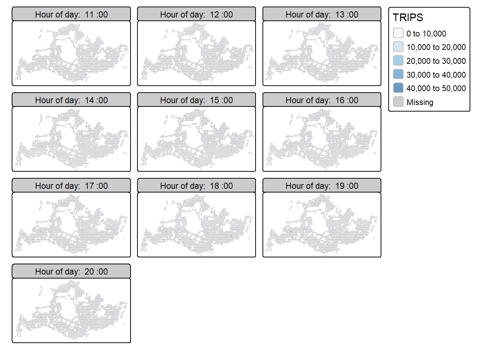
weekend_ungroup <- weekend_ungroup %>% select(-title_hour)There are less frequency of bus trips on holidays and weekend, with most of them having 0 to 10,000 bus trips per hour.
weekend_time <- trips %>%
filter(DAY_TYPE == 'WEEKENDS/HOLIDAY' & HOUR_OF_DAY >= 11 & HOUR_OF_DAY <= 20) %>%
group_by(HOUR_OF_DAY) %>%
summarise(TRIPS = sum(TRIPS))
weekend_time# A tibble: 10 × 2
HOUR_OF_DAY TRIPS
<dbl> <dbl>
1 11 2147794
2 12 2243641
3 13 2156924
4 14 2019550
5 15 2019245
6 16 2115944
7 17 2293242
8 18 2220894
9 19 1948271
10 20 1679202As can be seen, there are approxamtely similar number of bus trips on the weekend from 11am to 8pm.
LMSA Analysis
In this section, we’ll be performing LMSA analysis to identify specific locations in the map that show similar or dissimilar values. LMSA allows us to examine the relationship of each location with its neighbours, which provide deeper insight than the global trend. In this section we’ll be using statistic methods such as:
Local Moran’s I: to detect outlier and clusters
Getis-Ord: detect hot spots and cold spots
LMSA Analysis of Bus Trips on Weekday Morning
In this section, we’ll be performing LMSA analysis of bus bus trips on weekday morning with Local Moran’s I to detect outliers (negative value) and cluster (positive value) and Getis-Ord (to detect cold spots and hot spots
Local Moran’s I
To perform Local Moran’s I, we first need to compute contiguity spatial weights to define the neighbourhood’s relationship with each other.
nb_mday <- sfdep::st_contiguity(weekday_morning_ungroup)
wt_mday <- sfdep::st_weights(nb_mday, style = "W", allow_zero = TRUE)
wm_mday <- weekday_morning_ungroup %>%
dplyr::mutate(
nb = I(nb_mday),
wt = I(wt_mday),
.before = 1
)
names(wm_mday)[1] "nb" "wt" "BUS_STOP_N" "HEX_ID" "HOUR_OF_DAY"
[6] "TRIPS" "geometry" summary(wm_mday$nb)Neighbour list object:
Number of regions: 19511
Number of nonzero links: 1042186
Percentage nonzero weights: 0.2737702
Average number of links: 53.4153
Link number distribution:
3 4 5 6 7 8 9 10 11 12 13 14 15 16 17 18
40 5 8 17 113 4 11 47 149 25 37 72 266 30 29 50
19 20 21 22 23 24 25 26 27 28 29 30 31 32 33 34
435 47 94 91 608 42 40 73 505 64 105 48 637 81 36 92
35 36 37 38 39 40 41 42 43 44 45 46 47 48 49 50
778 38 49 103 936 108 84 119 991 52 29 131 946 29 74 41
51 52 53 54 55 56 57 58 59 60 61 62 63 64 65 66
1185 45 35 80 1084 39 76 80 1157 35 110 106 1105 34 29 123
67 68 69 70 71 72 73 74 75 77 78 79 80 81 82 83
1048 28 73 106 828 24 40 55 616 58 27 616 12 28 56 500
84 85 87 89 90 91 93 94 95 97 98 99 101 103 107 111
13 40 264 82 56 360 52 20 240 14 23 148 16 144 60 72
114 115 122
12 28 20
40 least connected regions:
307 308 309 310 2205 2206 2207 2208 4765 4766 4767 4768 5115 5116 5117 5118 5119 5120 5121 5122 5304 5305 5306 5307 9605 9606 9607 9608 9732 9733 9734 9735 18682 18683 18684 18685 18964 18965 18966 18967 with 3 links
20 most connected regions:
7787 7788 7789 7790 8059 8060 8061 8062 8063 8064 8065 8066 8067 8068 8069 8070 8211 8212 8213 8214 with 122 linksThe report identify 19K regions with one area having 20 neighbours. There are also 20 areas that only have 3 neighbours.
Next, we’ll be computing local Moran’s I using local_moran() which compute li values
set.seed(1234)
moran_mday <- weekday_morning_ungroup %>%
mutate(local_moran = local_moran(TRIPS, nb_mday, wt_mday, nsim = 99),
.before = 1) %>%
unnest(local_moran)Next, we’ll map the Local Moran’s I values.
tm_shape(moran_mday) +
tm_polygons(fill = "ii",
fill.scale = tm_scale_intervals(
style = "pretty",
n = 5,
values = "brewer.RdBu"),
fill.legend = tm_legend( title = "Local Morans'I",
position = tm_pos_out())) +
tm_borders(fill_alpha = 0.5) +
tm_title("Loal Morans'I of Weekday Morning (Queen's method)")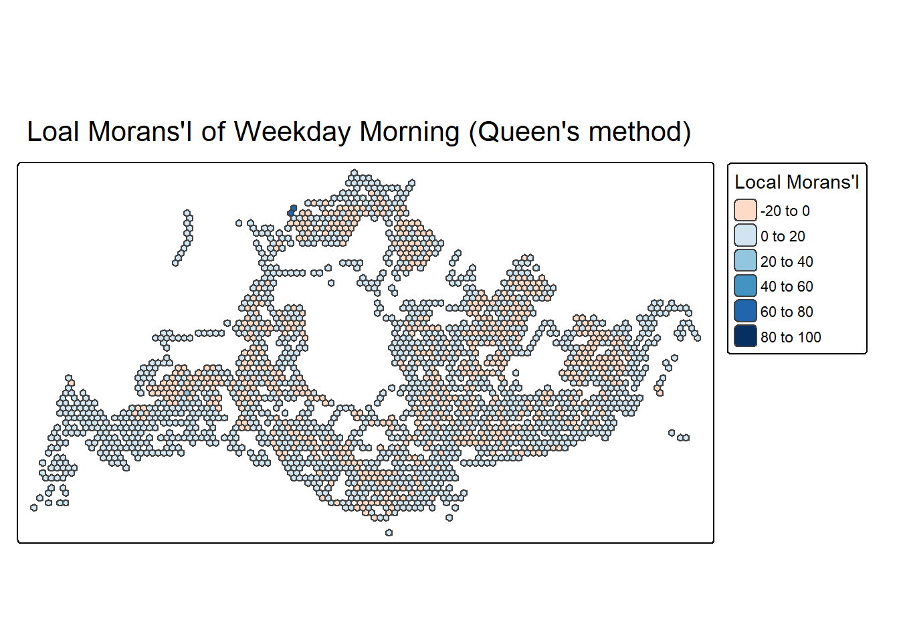
Note
- There is a lot of potential outliers and cluster found across Singapore’s bus stop, most of bus stops at the edges of Singapore are have quite similar bus trips. But places that are more in the center of Singapore have more outliers.
tm_shape(moran_mday) +
tm_polygons(fill = "p_ii",
fill.scale = tm_scale_intervals(
breaks = c(-Inf, 0.001, 0.01, 0.05, 0.1, Inf),
values = "-brewer.Reds"),
fill.legend = tm_legend( title = "p-value",
position = tm_pos_out())) +
tm_borders(fill_alpha = 0.5) +
tm_title("p-values of Loal Moran's I of Weekday Morning (Queen's method)")
Note
As can be seen, places in the east (e.g. Tuas, Pioneer and Boon Lay) have similar values as each other (indicated from the p-value that’s less than 0.001)
Edges in the east region also have similar values as their p-values are less than 0.001
North region where there is a lot of outlier also have p-value <0.001
North east region and central area surprisingly have less significant observations.
Next, we can also visualize the relationship between bus trips and the average values of its neighbours (using sptial lag) to identify spatial autocorrelation. We’ll also be performing standardization on the spatial lag and bus trip column to reveal pattern of high-high, high-low, low-high and low-low value clusters.
In this code chunk, we’ll use st_lag to calculate spatial lag of neighbours.
moran_mday <- moran_mday %>%
mutate(lag_mday = st_lag(
TRIPS, nb_mday, wt_mday),
.before = 1) %>%
unnest(lag_mday)We’ll rescale the bus trip column and spatial lag
moran_mday <- moran_mday %>%
mutate(trips_scaled = scale(TRIPS),
scaled_lag_mday = scale(lag_mday),
.before = 1)We’ll visualize the result using scatterplot to understand the trend of clusters.
ggplot(data = moran_mday,
aes(x = trips_scaled,
y = scaled_lag_mday,
color = mean)) +
geom_point(size = 2) +
geom_smooth(method = "lm",
se = FALSE,
color = "black") +
geom_hline(yintercept=mean(moran_mday$scaled_lag_mday), lty=2) +
geom_vline(xintercept=mean(moran_mday$morning_weekday_scaled), lty=2) +
scale_color_manual(
values = c("High-High" = "red",
"Low-Low" = "blue",
"Low-High" = "lightblue",
"High-Low" = "pink")) +
labs(x = "Trips",
y = "Spatial Lag of GDPPC",
title = "Moran Scatterplot with Weekday Morning Quadrants") +
theme_minimal()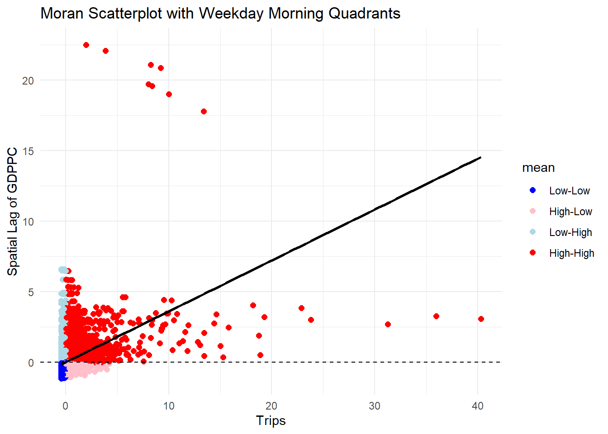
There are a lot of areas that are high frequency of bus trips surrounded by areas with high bus trips frequency. While low-low, high-low and low-high clusters are not so common during weekday morning.
Next, we’ll derive the spatially lagged bus trip and center the spatially lagged variable. We’ll also create a new column to determine if the observation is insignificant, low-low cluster, low-high-cluster, high-low and high-high cluster.
alpha <- 0.05
moran_mday <- moran_mday %>%
mutate(
weekday_morning_cluster = ifelse(
p_ii < 0.05,
as.character(mean),
"Insignificant"),
weekday_morning_cluster = factor(
weekday_morning_cluster,
levels = c("Insignificant", "Low-Low", "Low-High", "High-Low", "High-High")
)
)wmday_map <- tm_shape(moran_mday) +
tm_polygons(
fill = "weekday_morning_cluster",
fill.scale = tm_scale_categorical(
values = c(
"grey80", # Insignificant
"blue", # Low-Low
"lightblue", # Low-High
"pink", # High-Low
"red" # High-High
)
),
fill.legend = tm_legend(
title = "Weekday Morning Clusters",
position = tm_pos_in("left", "bottom"))
) +
tm_borders() +
tm_title("Local Moran's I Clusters (p < 0.05)")
wmday_map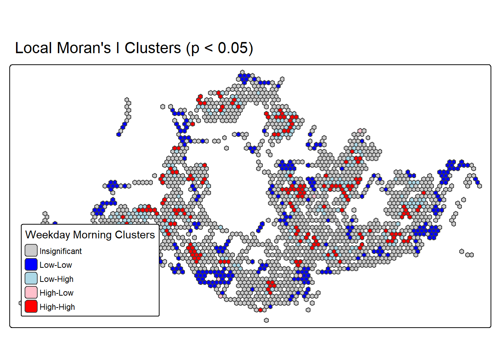
As can be seen, places that are edges of Singapore mostly have low-low clusters. While north east regions have most high-high clusters, followed by east regons.
Getis-Ord
The following steps are used to perform Getis ord:
- Derive spatial weight matrix
- Compute Gi* statistics
- Mapping Gi* statistics
In this exercise, we’ll be using adaptive distance weights to derive spatial weight matrix. K-nearest neighbours will be used to control the number of neighbours. So, before we derive the spatial weight matrix, we’ll use the elbow method to determine how many number of clusters would be optimal for the analysis.
trips_col <- "TRIPS"
features <- weekday_morning_ungroup %>% st_drop_geometry() %>% select(all_of(trips_col))
features <- scale(features)
# Elbow method
fviz_nbclust(features, kmeans, method = "wss")
optimal_k <- 0
km <- kmeans(features, centers = optimal_k, nstart = 25)
weekday_morning_ungroup$cluster <- factor(km$cluster)
# Plot clusters
library(ggplot2)
ggplot(weekday_morning_ungroup) +
geom_sf(aes(fill = cluster)) +
theme_minimal()Note: I set the code to eval = FALSE because when I run it it works, except the k_optimal gives me an error, but it generated the graph for the results of the elbow method. But when I render it, it doesn’t work. I also set eval = FALSE on the weekday afternoon and weekend analysis
From the graph, we can conclude that 5 would be the optimal number of cluster to derive the spatial weights.
mday_dw <- weekday_morning_ungroup %>%
mutate(nb_mday = include_self(
st_knn(
st_geometry(geometry),
k = 5)),
wt_mday = st_weights(
nb_mday, style = "W"),
.before = 1)Next, we’ll compute the local Gi* to identify the statistically significant hot spots and cold spots. It compares the total value of that area to global total to derive spatial clustering value.
HCSA_mday <- mday_dw %>%
mutate(
gistar_mday = local_gstar_perm(
TRIPS, nb_mday, wt_mday, nsim = 99),
.before = 1) %>%
unnest(gistar_mday)We’ll categorize the areas to high-high, high-low, low-high and low-low clusters and store them to the HCSA_mday variable
HCSA_mday <- HCSA_mday %>%
mutate(HCSA_cluster = case_when(
p_sim > 0.05 ~ "Insignificant",
p_sim <= 0.05 & cluster == "High" ~ "Hot spot",
p_sim <= 0.05 & cluster == "Low" ~ "Cold spot",
TRUE ~ "Other"),
HCSA_cluster = factor(
HCSA_cluster,
levels = c("Insignificant", "Hot spot", "Cold spot")
),
.before = 1
)Next, we’ll visualize the result
mday_map <- tm_shape(HCSA_mday) +
tm_polygons(
fill = "HCSA_cluster",
fill.scale = tm_scale_categorical(
values = c(
"grey80", # Insignificant
"red", # Low-Low
"blue" # High-High
)
),
fill.legend = tm_legend(
title = "HSCA Cluster",
position = tm_pos_in("left", "bottom"))
) +
tm_borders() +
tm_title("HCSA Clusters (p < 0.05)")
mday_map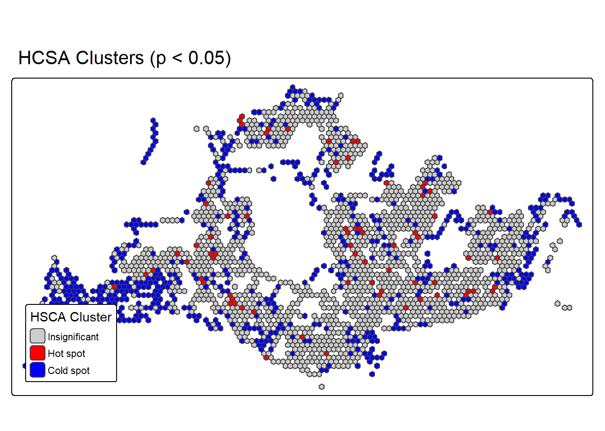
There are more coldspots than hotspots, which means that areas with low bus trips frequencies have neighbours that have low bus trip frequencies too. This is true for edges of Singapore and east region. There are very hotspots spread throughout Singapore. This means that there are few areas that whose neighbours also have high frequencies sof bus trips.
LMSA Analysis of Bus Trips on Afternoon Weekday
Local Moran’s I
We’ll use the same steps done in the morning weekday Local Moran’s I analysis. First, we’ll compute spatial weights and standardized weight matrix.
nb_aday <- sfdep::st_contiguity(weekday_afternoon_ungroup)
wt_aday <- sfdep::st_weights(nb_aday, style = "W", allow_zero = TRUE)
wm_aday <- weekday_afternoon_ungroup %>%
dplyr::mutate(
nb = I(nb_aday),
wt = I(wt_aday),
.before = 1
)
names(wm_aday)[1] "nb" "wt" "BUS_STOP_N" "HEX_ID" "HOUR_OF_DAY"
[6] "TRIPS" "geometry" Next, we’ll compute Local Moran’s I and visualize the results.
set.seed(1234)
moran_aday <- weekday_afternoon_ungroup %>%
mutate(local_moran = local_moran(TRIPS, nb_aday, wt_aday, nsim = 99),
.before = 1) %>%
unnest(local_moran)tm_shape(moran_aday) +
tm_polygons(fill = "ii",
fill.scale = tm_scale_intervals(
style = "pretty",
n = 5,
values = "brewer.RdBu"),
fill.legend = tm_legend( title = "Local Morans'I",
position = tm_pos_out())) +
tm_borders(fill_alpha = 0.5) +
tm_title("Loal Morans'I of Weekday Afternoon (Queen's method)")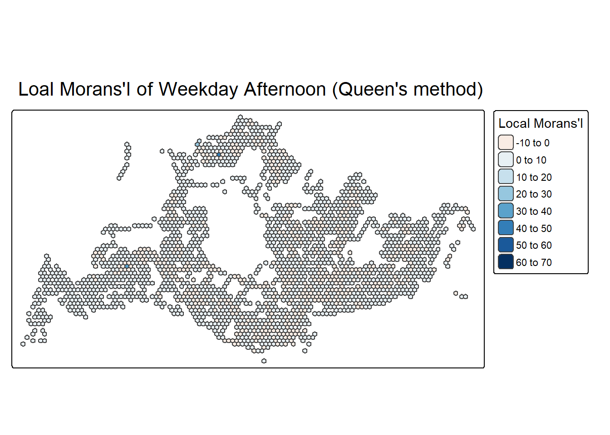
Observations from the graph:
As can be seen, the results look similar to the weekday morning result. There are mix of potential outliers and clusters on weekday afternoon. Areas that are on the edges of Singapore have quite similar values, while areas more center of the map have more outliers.
There are two points (one in the north region and the other on the east region) that have every similar values as their neighbours.
Next, we’ll check for the significance of each areas.
tm_shape(moran_aday) +
tm_polygons(fill = "p_ii",
fill.scale = tm_scale_intervals(
breaks = c(-Inf, 0.001, 0.01, 0.05, 0.1, Inf),
values = "-brewer.Reds"),
fill.legend = tm_legend( title = "p-value",
position = tm_pos_out())) +
tm_borders(fill_alpha = 0.5) +
tm_title("p-values of Loal Moran's I of Weekday Afternoon (Queen's method)")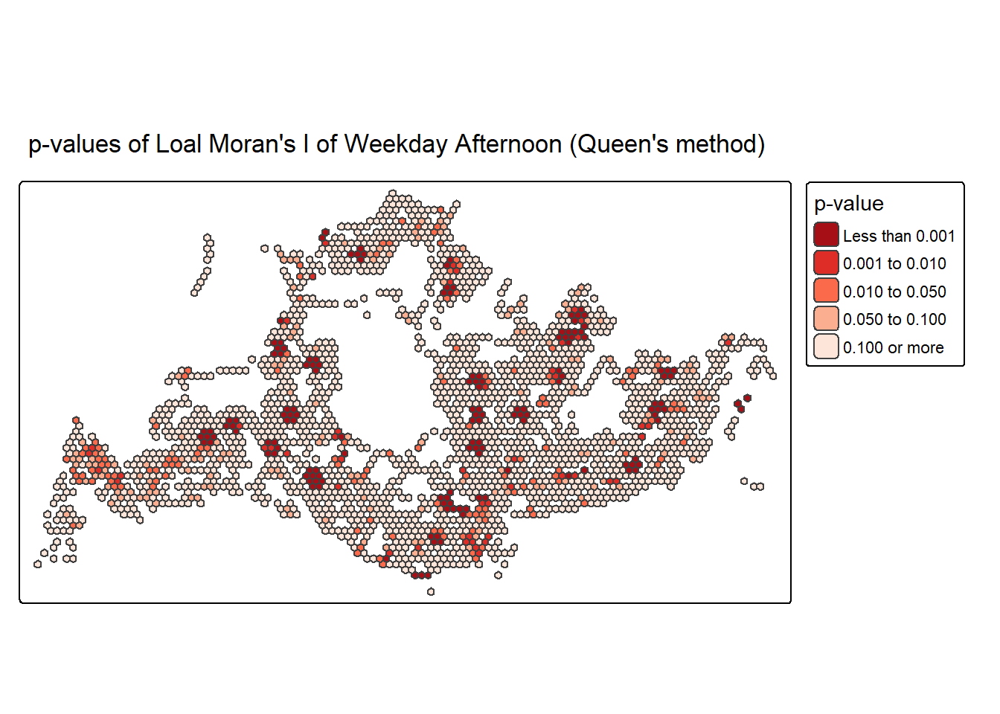
We observe less significance of the observation overall, but some areas have significant observations. There are more significant observations on north eat region, central area and east region.
Next, we’ll standardize the bus trip column and spatial lag variable.
moran_aday <- moran_aday %>%
mutate(lag_aday = st_lag(
TRIPS, nb_aday, wt_aday),
.before = 1) %>%
unnest(lag_aday)moran_aday <- moran_aday %>%
mutate(trips_scaled_aday = scale(TRIPS),
scaled_lag_aday = scale(lag_aday),
.before = 1)We’ll visualize the result in a scatterplot.
ggplot(data = moran_aday,
aes(x = trips_scaled_aday,
y = scaled_lag_aday,
color = mean)) +
geom_point(size = 2) +
geom_smooth(method = "lm",
se = FALSE,
color = "black") +
geom_hline(yintercept=mean(moran_aday$scaled_lag_aday), lty=2) +
geom_vline(xintercept=mean(moran_aday$weekday_afternoon_ungroup), lty=2) +
scale_color_manual(
values = c("High-High" = "red",
"Low-Low" = "blue",
"Low-High" = "lightblue",
"High-Low" = "pink")) +
labs(x = "Trips",
y = "Spatial Lag of GDPPC",
title = "Moran Scatterplot with Weekday Afternoon Quadrants") +
theme_minimal()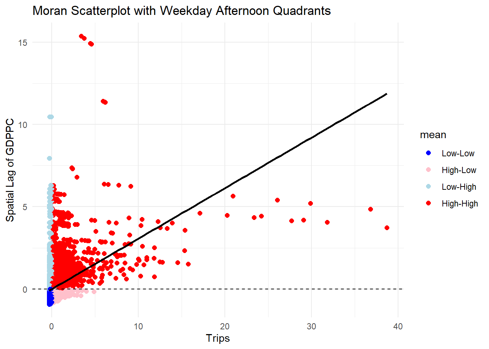
Similar to the results of morning weekday scatterplot, we have a lot of high-high clusters but less high-low, low-high and low-low clusters.
Next, we’ll store the results in a new column and visualize it.
moran_aday <- moran_aday %>%
mutate(
weekday_afternoon_cluster = ifelse(
p_ii < 0.05,
as.character(mean),
"Insignificant"),
weekday_morning_cluster = factor(
weekday_afternoon_cluster,
levels = c("Insignificant", "Low-Low", "Low-High", "High-Low", "High-High")
)
)aday_map <- tm_shape(moran_aday) +
tm_polygons(
fill = "weekday_afternoon_cluster",
fill.scale = tm_scale_categorical(
values = c(
"grey80", # Insignificant
"blue", # Low-Low
"lightblue", # Low-High
"pink", # High-Low
"red" # High-High
)
),
fill.legend = tm_legend(
title = "Weekday Afternoon Clusters",
position = tm_pos_in("left", "bottom"))
) +
tm_borders() +
tm_title("Local Moran's I Clusters (p < 0.05)")
aday_map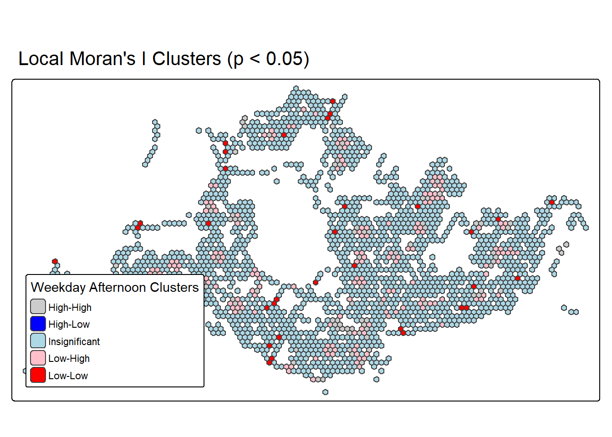
There are more low-high clusters indicating outliers. We also have a few high-high and high-low clusters observation throughout Singapore.
Getis Ord
The same steps are taken as weekday afternoon to perform Getis Ord. It starts by determining the optimal number of cluster using elbow method.
trips_col <- "TRIPS"
features <- weekday_afternoon_ungroup %>% st_drop_geometry() %>% select(all_of(trips_col))
features <- scale(features)
# Elbow method
fviz_nbclust(features, kmeans, method = "wss")
optimal_k <- 0
km <- kmeans(features, centers = optimal_k, nstart = 25)
weekday_morning_ungroup$cluster <- factor(km$cluster)
# Plot clusters
library(ggplot2)
ggplot(weekday_afternoon_ungroup) +
geom_sf(aes(fill = cluster)) +
theme_minimal()From the elbow method, we can conclude that 4 would be the best number of cluster to derive spatial weight matrix.
Next, we’ll apply same steps as weekday morning analysis. We’ll start by deriving spatial weights metrix.
aday_dw <- weekday_afternoon_ungroup %>%
mutate(nb_aday = include_self(
st_knn(
st_geometry(geometry),
k = 4)),
wt_aday = st_weights(
nb_aday, style = "W"),
.before = 1)Next, we’ll compute the Gi* statistics and map the results.
HCSA_aday <- aday_dw %>%
mutate(
gistar_aday = local_gstar_perm(
TRIPS, nb_aday, wt_aday, nsim = 99),
.before = 1) %>%
unnest(gistar_aday)HCSA_aday <- HCSA_aday %>%
mutate(HCSA_cluster = case_when(
p_sim > 0.05 ~ "Insignificant",
p_sim <= 0.05 & cluster == "High" ~ "Hot spot",
p_sim <= 0.05 & cluster == "Low" ~ "Cold spot",
TRUE ~ "Other"),
HCSA_cluster = factor(
HCSA_cluster,
levels = c("Insignificant", "Hot spot", "Cold spot")
),
.before = 1
)aday_map <- tm_shape(HCSA_aday) +
tm_polygons(
fill = "HCSA_cluster",
fill.scale = tm_scale_categorical(
values = c(
"grey80", # Insignificant
"red", # Low-Low
"blue" # High-High
)
),
fill.legend = tm_legend(
title = "HSCA Cluster",
position = tm_pos_in("left", "bottom"))
) +
tm_borders() +
tm_title("HCSA Clusters (p < 0.05)")
aday_map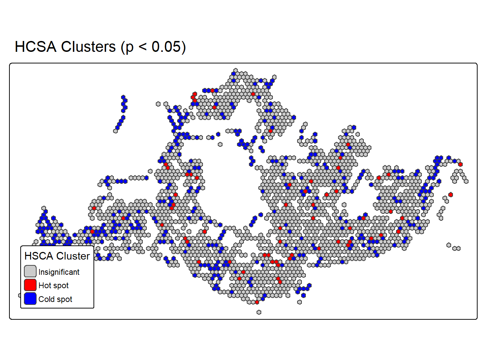
From this graph we can see that there are less cold spots and hot spots than weekday morning. However we see similar trend: coldspots on edges of Singapore and hotspots are more spread out throughout Singapore. There are more hotspots on central area and northeast region.
LMSA Analysis of Bus Trips on Weekend
Local Moran’s I
The same steps taken in weekday morning analysis applied here too. We’ll start by deriving spatial weights matrix.
nb_end <- sfdep::st_contiguity(weekend_ungroup)
wt_end <- sfdep::st_weights(nb_end, style = "W", allow_zero = TRUE)
wm_end <- weekend_ungroup %>%
dplyr::mutate(
nb = I(nb_end),
wt = I(wt_end),
.before = 1
)
names(wm_end)[1] "nb" "wt" "HEX_ID" "HOUR_OF_DAY" "TRIPS"
[6] "geometry" Next, we’ll compute for local moran’s I.
set.seed(1234)
moran_end <- weekend_ungroup %>%
mutate(local_moran = local_moran(TRIPS, nb_end, wt_end, nsim = 99),
.before = 1) %>%
unnest(local_moran)We’ll visualize the results and p-value.
tm_shape(moran_end) +
tm_polygons(fill = "ii",
fill.scale = tm_scale_intervals(
style = "pretty",
n = 5,
values = "brewer.RdBu"),
fill.legend = tm_legend( title = "Local Morans'I",
position = tm_pos_out())) +
tm_borders(fill_alpha = 0.5) +
tm_title("Loal Morans'I of Weekend (Queen's method)")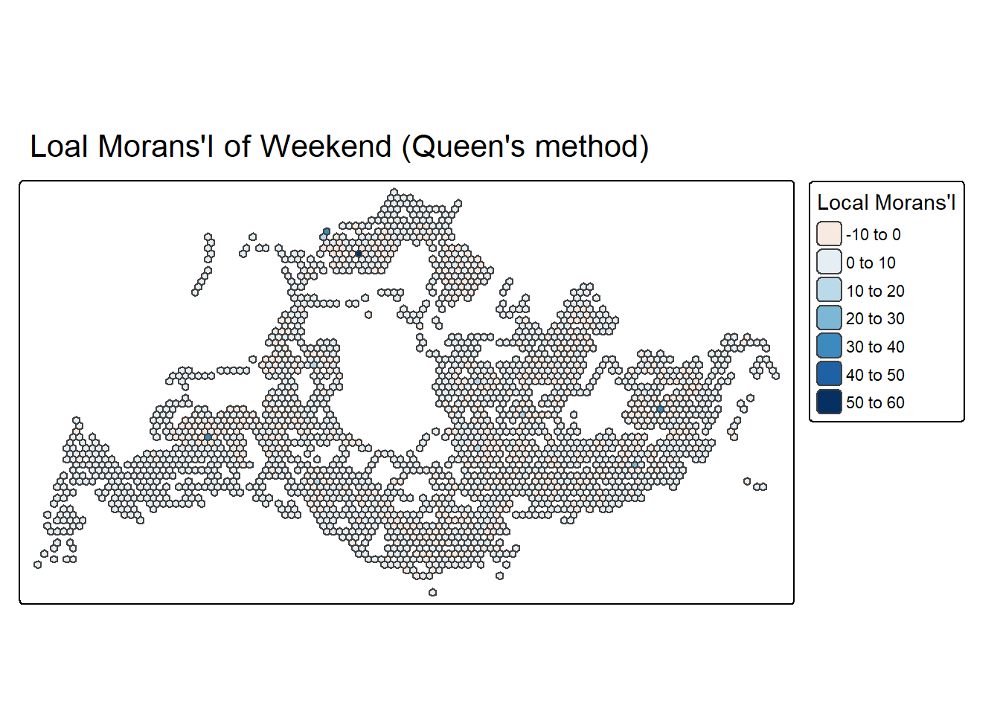
As can be seen, there are a lot of potential outliers and clusters throughout Singapore, which is a similar trend as weekday morning and afternoon. We also see few highly points that have very similar values with its neighbours.
tm_shape(moran_end) +
tm_polygons(fill = "p_ii",
fill.scale = tm_scale_intervals(
breaks = c(-Inf, 0.001, 0.01, 0.05, 0.1, Inf),
values = "-brewer.Reds"),
fill.legend = tm_legend( title = "p-value",
position = tm_pos_out())) +
tm_borders(fill_alpha = 0.5) +
tm_title("p-values of Loal Moran's I of Weekend (Queen's method)")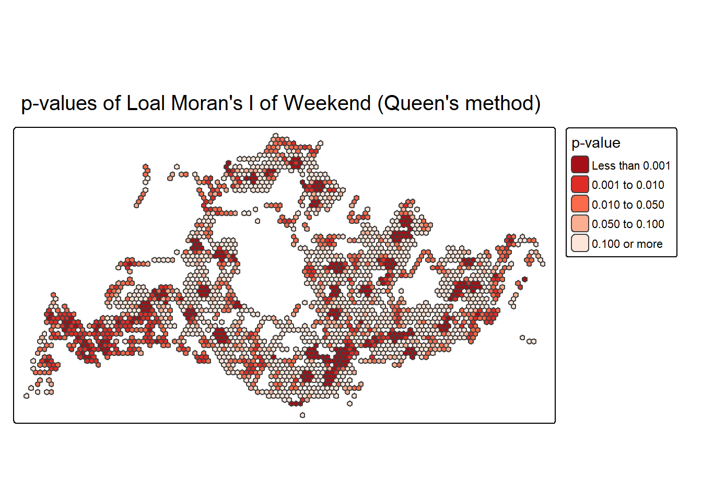
The observations is supported with the p-values being less than 0.001 in a lots of areas throughout Singapore (espceially on the central areas, west and east region)
Next, we’ll scale the bus trip column and its spatial lag variable.
moran_end <- moran_end %>%
mutate(lag_end = st_lag(
TRIPS, nb_end, wt_end),
.before = 1) %>%
unnest(lag_end)moran_end <- moran_end %>%
mutate(trips_scaled_weekend = scale(TRIPS),
scaled_lag_end = scale(lag_end),
.before = 1)We’ll visualize the result in a scatterplot.
ggplot(data = moran_end,
aes(x = trips_scaled_weekend,
y = scaled_lag_end,
color = mean)) +
geom_point(size = 2) +
geom_smooth(method = "lm",
se = FALSE,
color = "black") +
geom_hline(yintercept=mean(moran_mday$scaled_lag_mday), lty=2) +
geom_vline(xintercept=mean(moran_mday$morning_weekday_scaled), lty=2) +
scale_color_manual(
values = c("High-High" = "red",
"Low-Low" = "blue",
"Low-High" = "lightblue",
"High-Low" = "pink")) +
labs(x = "Trips",
y = "Spatial Lag of GDPPC",
title = "Moran Scatterplot with Weekend Quadrants") +
theme_minimal()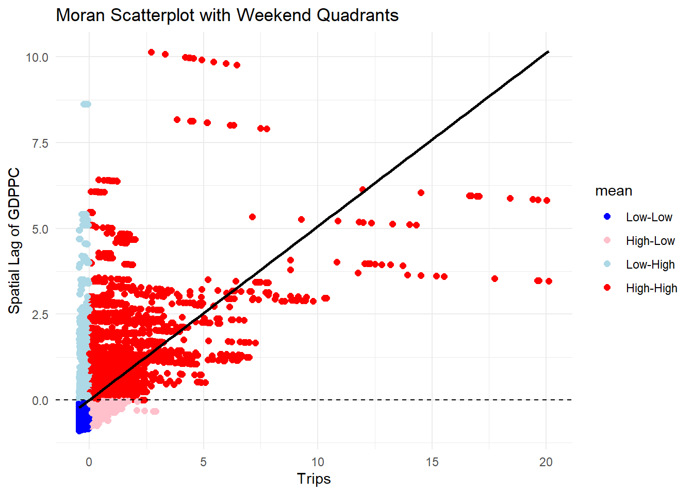
Similar to weekday morning and afternoon, there are more high-high clusters than other types of clusters.
We’ll store the results in a new column and visualize it.
alpha <- 0.05
moran_end <- moran_end %>%
mutate(
weekend_cluster = ifelse(
p_ii < 0.05,
as.character(mean),
"Insignificant"),
weekend_cluster = factor(
weekend_cluster,
levels = c("Insignificant", "Low-Low", "Low-High", "High-Low", "High-High")
)
)wmday_end <- tm_shape(moran_end) +
tm_polygons(
fill = "weekend_cluster",
fill.scale = tm_scale_categorical(
values = c(
"grey80", # Insignificant
"blue", # Low-Low
"lightblue", # Low-High
"pink", # High-Low
"red" # High-High
)
),
fill.legend = tm_legend(
title = "Weekend Clusters",
position = tm_pos_in("left", "bottom"))
) +
tm_borders() +
tm_title("Local Moran's I Clusters (p < 0.05)")
wmday_end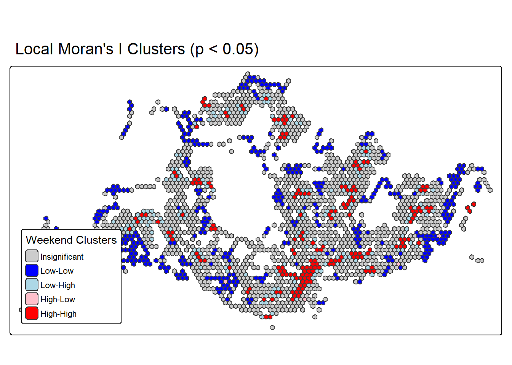
There are more low-low clusters during weekends or holidays and less high-high clusters. Most high-high clusters are in the central area. While there are a few low-high clusters spread across Singapore, indicating outliers.
Getis Ord
Next, we’ll identify hotspot and coldspot using Getis-ord. we start by determining the optimal number fo cluster using elbow method.
trips_col <- "TRIPS"
features <- weekend_ungroup %>% st_drop_geometry() %>% select(all_of(trips_col)) # or more variables
features <- scale(features) # optional: standardize
# Elbow method
fviz_nbclust(features, kmeans, method = "wss")
optimal_k <- 0
km <- kmeans(features, centers = optimal_k, nstart = 25)
weekday_morning_ungroup$cluster <- factor(km$cluster)
# Plot clusters
library(ggplot2)
ggplot(weekend_ungroup) +
geom_sf(aes(fill = cluster)) +
theme_minimal()As can be seen the number of optimal number fo cluster falls on 4. Now, we can derive the spatial weight matrix.
end_dw <- weekend_ungroup %>%
mutate(nb_mday = include_self(
st_knn(
st_geometry(geometry),
k = 5)),
wt_end = st_weights(
nb_end, style = "W"),
.before = 1)Next, we’ll compute for Gi* statitics and map the results.
HCSA_end <- end_dw %>%
mutate(
gistar_end = local_gstar_perm(
TRIPS, nb_end, wt_end, nsim = 99),
.before = 1) %>%
unnest(gistar_end)HCSA_end <- HCSA_end %>%
mutate(HCSA_cluster = case_when(
p_sim > 0.05 ~ "Insignificant",
p_sim <= 0.05 & cluster == "High" ~ "Hot spot",
p_sim <= 0.05 & cluster == "Low" ~ "Cold spot",
TRUE ~ "Other"),
HCSA_cluster = factor(
HCSA_cluster,
levels = c("Insignificant", "Hot spot", "Cold spot")
),
.before = 1
)end_map <- tm_shape(HCSA_mday) +
tm_polygons(
fill = "HCSA_cluster",
fill.scale = tm_scale_categorical(
values = c(
"grey80", # Insignificant
"red", # Low-Low
"blue" # High-High
)
),
fill.legend = tm_legend(
title = "HSCA Cluster",
position = tm_pos_in("left", "bottom"))
) +
tm_borders() +
tm_title("HCSA Clusters (p < 0.05)")
end_map
As can be seen there are a lot of coldspots than hotspots on the weekend period. This is especially true for the east region. This means that there isn’t much bus that stops on those region compared to weekdays.
EHSA Analysis
Emerging Hot Spot Analysis is a spatio-temporal method to revel and descrobe how hot spots and cold spots evolve over time. The following steps are used to perform EHSA:
Build spacetime cube
Calculate Getis-Ord local Gi for each bin
Evaluate hotspots and coldspots using Mann Kendall test
Categorize each study area by comparing the z-score and p-value of the results to hotspot z-score and p-value and
Weekday Morning
Since we’ll perform a space time analysis, we’ll need to change our tbl dataframe to sf dataframe using st_as_sf().
weekday_morning_ungroup <- st_as_sf(weekday_morning_ungroup, crs=3414)
class(weekday_morning_ungroup)[1] "sf" "tbl_df" "tbl" "data.frame"Next, we’ll compute the spatial matrix using queen’s method.
nb_mornw <- poly2nb(weekday_morning_ungroup, queen = TRUE) # polygon neighbors
wt_mornw <- nb2listw(nb_mornw, style = "B") Next, we’ll compute Gi*
weekday_morning_ungroup$Gi_star <- localG(weekday_morning_ungroup$TRIPS, wt_mornw)gi_timeseries_mornw <- weekday_morning_ungroup %>%
st_drop_geometry() %>%
select(HEX_ID, HOUR_OF_DAY, Gi_star) %>%
arrange(HEX_ID, HOUR_OF_DAY)We’ll also categorize if a area is a coldspot or hotspot based on the Gi* results. If it’s less than 0, then it is categorized as coldspot. If the value is more than 0, then it is categorized as hotspot.
gi_timeseries_mornw <- gi_timeseries_mornw %>%
mutate(
spot_type = case_when(
Gi_star > 0 ~ "Hot",
Gi_star < 0 ~ "Cold",
TRUE ~ "Not Significant"
)
)
head(gi_timeseries_mornw)# A tibble: 6 × 4
HEX_ID HOUR_OF_DAY Gi_star spot_type
<fct> <dbl> <localG> <chr>
1 H0001 6 -0.7299468 Cold
2 H0001 7 -0.7281329 Cold
3 H0001 8 -0.7212805 Cold
4 H0001 9 -0.7190635 Cold
5 H0002 6 -0.7773220 Cold
6 H0002 7 -0.7753065 Cold We’ll perform the Mann-Kendall test for each hexagon. However, since some of our TRIPS column have 0 values and Mann-Kendall test require at least 3 time points, so we’ll keep the hexagon, but it’ll display as NA for the test result.
all_hex <- unique(gi_timeseries_mornw$HEX_ID)
mk_results_mornw <- gi_timeseries_mornw %>%
group_by(HEX_ID) %>%
summarise(
tau = if(n() >= 3) Kendall(Gi_star, HOUR_OF_DAY)$tau else NA_real_,
p_value = if(n() >= 3) Kendall(Gi_star, HOUR_OF_DAY)$sl else NA_real_
) %>%
mutate(
trend_type = case_when(
is.na(tau) ~ "Insufficient Data",
tau > 0 & p_value < 0.05 ~ "Increasing",
tau < 0 & p_value < 0.05 ~ "Decreasing",
TRUE ~ "Persistent"
)
)WARNING: Error exit, tauk2. IFAULT = 12
WARNING: Error exit, tauk2. IFAULT = 12
WARNING: Error exit, tauk2. IFAULT = 12
WARNING: Error exit, tauk2. IFAULT = 12
WARNING: Error exit, tauk2. IFAULT = 12
WARNING: Error exit, tauk2. IFAULT = 12
WARNING: Error exit, tauk2. IFAULT = 12
WARNING: Error exit, tauk2. IFAULT = 12
WARNING: Error exit, tauk2. IFAULT = 12
WARNING: Error exit, tauk2. IFAULT = 12
WARNING: Error exit, tauk2. IFAULT = 12
WARNING: Error exit, tauk2. IFAULT = 12
WARNING: Error exit, tauk2. IFAULT = 12
WARNING: Error exit, tauk2. IFAULT = 12
WARNING: Error exit, tauk2. IFAULT = 12
WARNING: Error exit, tauk2. IFAULT = 12
WARNING: Error exit, tauk2. IFAULT = 12
WARNING: Error exit, tauk2. IFAULT = 12
WARNING: Error exit, tauk2. IFAULT = 12
WARNING: Error exit, tauk2. IFAULT = 12
WARNING: Error exit, tauk2. IFAULT = 12
WARNING: Error exit, tauk2. IFAULT = 12
WARNING: Error exit, tauk2. IFAULT = 12
WARNING: Error exit, tauk2. IFAULT = 12
WARNING: Error exit, tauk2. IFAULT = 12
WARNING: Error exit, tauk2. IFAULT = 12
WARNING: Error exit, tauk2. IFAULT = 12
WARNING: Error exit, tauk2. IFAULT = 12
WARNING: Error exit, tauk2. IFAULT = 12
WARNING: Error exit, tauk2. IFAULT = 12
WARNING: Error exit, tauk2. IFAULT = 12
WARNING: Error exit, tauk2. IFAULT = 12
WARNING: Error exit, tauk2. IFAULT = 12
WARNING: Error exit, tauk2. IFAULT = 12
WARNING: Error exit, tauk2. IFAULT = 12
WARNING: Error exit, tauk2. IFAULT = 12
WARNING: Error exit, tauk2. IFAULT = 12
WARNING: Error exit, tauk2. IFAULT = 12
WARNING: Error exit, tauk2. IFAULT = 12
WARNING: Error exit, tauk2. IFAULT = 12
WARNING: Error exit, tauk2. IFAULT = 12
WARNING: Error exit, tauk2. IFAULT = 12
WARNING: Error exit, tauk2. IFAULT = 12
WARNING: Error exit, tauk2. IFAULT = 12
WARNING: Error exit, tauk2. IFAULT = 12
WARNING: Error exit, tauk2. IFAULT = 12
WARNING: Error exit, tauk2. IFAULT = 12
WARNING: Error exit, tauk2. IFAULT = 12
WARNING: Error exit, tauk2. IFAULT = 12
WARNING: Error exit, tauk2. IFAULT = 12
WARNING: Error exit, tauk2. IFAULT = 12
WARNING: Error exit, tauk2. IFAULT = 12
WARNING: Error exit, tauk2. IFAULT = 12
WARNING: Error exit, tauk2. IFAULT = 12
WARNING: Error exit, tauk2. IFAULT = 12
WARNING: Error exit, tauk2. IFAULT = 12
WARNING: Error exit, tauk2. IFAULT = 12
WARNING: Error exit, tauk2. IFAULT = 12
WARNING: Error exit, tauk2. IFAULT = 12
WARNING: Error exit, tauk2. IFAULT = 12
WARNING: Error exit, tauk2. IFAULT = 12
WARNING: Error exit, tauk2. IFAULT = 12We’ll also categorize the coldspot/hotspot based on the trend, which could be the following: increasing, persistent, decreasing, diminishing and intensifying.
ehsa_mornw <- left_join(gi_timeseries_mornw %>% st_drop_geometry() %>% select(HEX_ID, spot_type),
mk_results_mornw %>% select(HEX_ID, trend_type),
by = "HEX_ID") %>%
mutate(
EHSA_category = case_when(
spot_type == "Hot" & trend_type == "Increasing" ~ "Intensifying Hot Spot",
spot_type == "Hot" & trend_type == "Persistent" ~ "Persistent Hot Spot",
spot_type == "Hot" & trend_type == "Decreasing" ~ "Diminishing Hot Spot",
spot_type == "Cold" & trend_type == "Increasing" ~ "Diminishing Cold Spot", # “Increasing” makes it less cold
spot_type == "Cold" & trend_type == "Persistent" ~ "Persistent Cold Spot",
spot_type == "Cold" & trend_type == "Decreasing" ~ "Intensifying Cold Spot",
TRUE ~ "Not Significant"
)
)Next, since we dropped the geometry earlier to perform the EHSA analysis, we’ll map it by joining it again with hexagon variable.
mornw_map <- hexagon %>%
left_join(ehsa_mornw, by = "HEX_ID")Now we can visualize it using the below code
tm_shape(mornw_map) +
tm_polygons("EHSA_category",
palette = c("red", "orange", "pink", "blue", "grey80", "darkblue", "lightblue"),
title = "EHSA Categories") +
tm_layout(legend.outside = TRUE)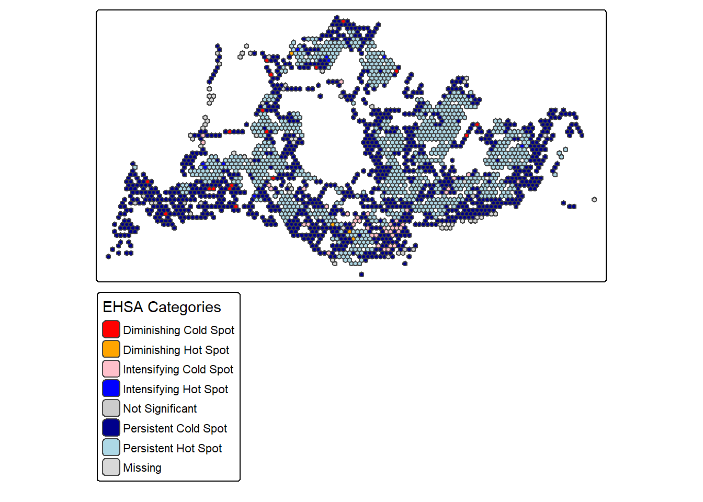
Interestingly, a lot of areas in the edge of Singapore are dominated by persistent cold spots (statistically significant coldspot for 90% of the time), while the center parts of each region (north east, east, west, central and north) persistent hotspots (statistically significant hotspot for 90% of the time).
But as we can observe, the west region has the most persistent hotspots while the east region has most persistent cold spot. Thus we can conclude that during the weekday morning hours (6am to 9am), there isn’t much change, so if they were previously a hotspot, it continued to be a hotspot until 9am, which works the same for coldspots.
Weekday Afternoon
The same steps we’ve taken for the weekday morning is done for the weekday afternoon too. We’ll start by changing the tbl dataframe to sf dataframe.
weekday_afternoon_ungroup <- st_as_sf(weekday_afternoon_ungroup, crs=3414)
class(weekday_afternoon_ungroup)[1] "sf" "tbl_df" "tbl" "data.frame"Next, we’ll compute the spatial matrix using queen’s method.
nb_aftrw <- poly2nb(weekday_afternoon_ungroup, queen = TRUE) # polygon neighbors
wt_aftrw <- nb2listw(nb_aftrw, style = "B") Next, we’ll compute Gi*
weekday_afternoon_ungroup$Gi_star <- localG(weekday_afternoon_ungroup$TRIPS, wt_aftrw)gi_timeseries_afterw <- weekday_afternoon_ungroup %>%
st_drop_geometry() %>%
select(HEX_ID, HOUR_OF_DAY, Gi_star) %>%
arrange(HEX_ID, HOUR_OF_DAY)We’ll also categorize if a area is a coldspot or hotspot based on the Gi* results.
gi_timeseries_afterw <- gi_timeseries_afterw %>%
mutate(
spot_type = case_when(
Gi_star > 0 ~ "Hot",
Gi_star < 0 ~ "Cold",
TRUE ~ "Not Significant"
)
)
head(gi_timeseries_afterw)# A tibble: 6 × 4
HEX_ID HOUR_OF_DAY Gi_star spot_type
<fct> <dbl> <localG> <chr>
1 H0001 17 -0.4220745 Cold
2 H0001 18 -0.4326962 Cold
3 H0001 19 -0.4236750 Cold
4 H0001 20 -0.4230930 Cold
5 H0002 17 -0.5395200 Cold
6 H0002 18 -0.5396655 Cold We’ll perform the Mann-Kendall test for each hexagon.
all_hex <- unique(gi_timeseries_afterw$HEX_ID)
mk_results_aftrw <- gi_timeseries_afterw %>%
group_by(HEX_ID) %>%
summarise(
tau = if(n() >= 3) Kendall(Gi_star, HOUR_OF_DAY)$tau else NA_real_,
p_value = if(n() >= 3) Kendall(Gi_star, HOUR_OF_DAY)$sl else NA_real_
) %>%
mutate(
trend_type = case_when(
is.na(tau) ~ "Insufficient Data",
tau > 0 & p_value < 0.05 ~ "Increasing",
tau < 0 & p_value < 0.05 ~ "Decreasing",
TRUE ~ "Persistent"
)
)WARNING: Error exit, tauk2. IFAULT = 12
WARNING: Error exit, tauk2. IFAULT = 12
WARNING: Error exit, tauk2. IFAULT = 12
WARNING: Error exit, tauk2. IFAULT = 12
WARNING: Error exit, tauk2. IFAULT = 12
WARNING: Error exit, tauk2. IFAULT = 12
WARNING: Error exit, tauk2. IFAULT = 12
WARNING: Error exit, tauk2. IFAULT = 12
WARNING: Error exit, tauk2. IFAULT = 12
WARNING: Error exit, tauk2. IFAULT = 12
WARNING: Error exit, tauk2. IFAULT = 12
WARNING: Error exit, tauk2. IFAULT = 12
WARNING: Error exit, tauk2. IFAULT = 12
WARNING: Error exit, tauk2. IFAULT = 12
WARNING: Error exit, tauk2. IFAULT = 12
WARNING: Error exit, tauk2. IFAULT = 12
WARNING: Error exit, tauk2. IFAULT = 12
WARNING: Error exit, tauk2. IFAULT = 12
WARNING: Error exit, tauk2. IFAULT = 12
WARNING: Error exit, tauk2. IFAULT = 12
WARNING: Error exit, tauk2. IFAULT = 12
WARNING: Error exit, tauk2. IFAULT = 12We’ll also categorize the coldspot/hotspot based on the trend (from Mann Kendall test)
ehsa_aftrw <- left_join(gi_timeseries_afterw %>% st_drop_geometry() %>% select(HEX_ID, spot_type),
mk_results_aftrw %>% select(HEX_ID, trend_type),
by = "HEX_ID") %>%
mutate(
EHSA_category = case_when(
spot_type == "Hot" & trend_type == "Increasing" ~ "Intensifying Hot Spot",
spot_type == "Hot" & trend_type == "Persistent" ~ "Persistent Hot Spot",
spot_type == "Hot" & trend_type == "Decreasing" ~ "Diminishing Hot Spot",
spot_type == "Cold" & trend_type == "Increasing" ~ "Diminishing Cold Spot", # “Increasing” makes it less cold
spot_type == "Cold" & trend_type == "Persistent" ~ "Persistent Cold Spot",
spot_type == "Cold" & trend_type == "Decreasing" ~ "Intensifying Cold Spot",
TRUE ~ "Not Significant"
)
)Next, since we dropped the geometry earlier to perform the EHSA analysis, we’ll map it by joining it again with hexagon variable.
aftrw_map <- hexagon %>%
left_join(ehsa_aftrw, by = "HEX_ID")Now we can visualize it using the below code
tm_shape(aftrw_map) +
tm_polygons("EHSA_category",
palette = c("red", "orange", "pink", "blue", "lightblue", "darkblue", "grey80"),
title = "EHSA Categories") +
tm_layout(legend.outside = TRUE)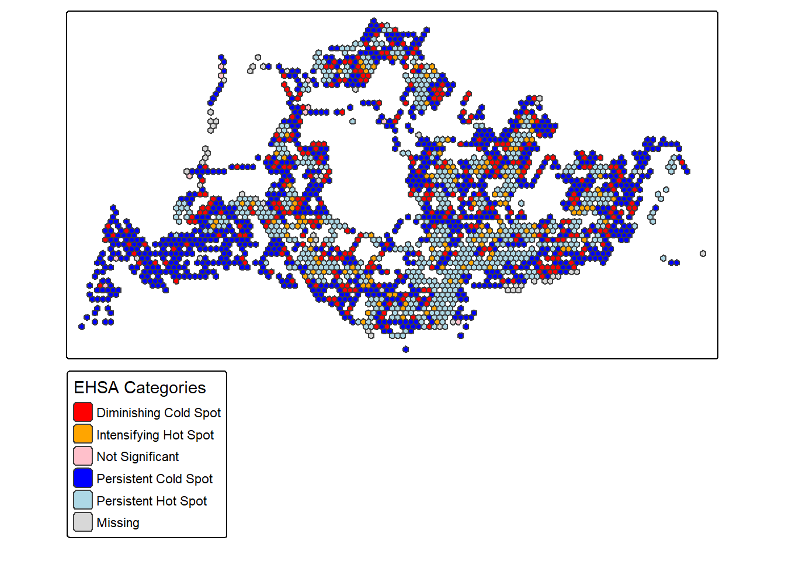
During the weekday afternoon (5pm to 8pm), there are more change over time in these areas. We’ll discuss each categorie’ meaning and what it means:
Diminishing coldspot: this means that the area is a coldspot 90% of the time, but it’s slowly decreasing. There are few areas all around Singapore with this trend.
Persistent coldspot: this means that this area is a coldspot 90% of the time, so there isn’t much change throughout different hours. Areas such as west region, northeast region and edges of Singapore don’t have much bus trips, this means that wait time for a bus in these location may be longer from 5pm - 8pm.
Intensifying hotspot: this means that this area is a hotspot 90% of the time but intensifies through time. Interestingly a lot of intensifying hot spot areas are beside diminishing cold spots, so this could potentially mean that these are actually outliers. This needs more investigation for a better understanding.
Persistent hotspot: this means that this area is a hotspot 90% of the time, so there isn’t much change throughout different hours. Areas such as Clementi and Yishun as well as central areas have a lot of bus that pass by these areas, which means it is easier to travel since there are less wait time to ride a bus.
Weekend/Holiday
we’ll need to transform our tbl dataframe to sf dataframe using st_as_sf().
weekend_ungroup <- st_as_sf(weekend_ungroup, crs=3414)
class(weekend_ungroup)[1] "sf" "tbl_df" "tbl" "data.frame"After that, we’ll compute the spatial matrix using queen’s method.
nb_end <- poly2nb(weekend_ungroup, queen = TRUE) # polygon neighbors
wt_end <- nb2listw(nb_end, style = "B") We’ll compute Gi*
weekend_ungroup$Gi_star <- localG(weekend_ungroup$TRIPS, wt_end)gi_timeseries_end <- weekend_ungroup %>%
st_drop_geometry() %>%
select(HEX_ID, HOUR_OF_DAY, Gi_star) %>%
arrange(HEX_ID, HOUR_OF_DAY)We’ll categorize if a area is a coldspot or hotspot based on the Gi* results.
gi_timeseries_end <- gi_timeseries_end %>%
mutate(
spot_type = case_when(
Gi_star > 0 ~ "Hot",
Gi_star < 0 ~ "Cold",
TRUE ~ "Not Significant"
)
)
head(gi_timeseries_end)# A tibble: 6 × 4
HEX_ID HOUR_OF_DAY Gi_star spot_type
<fct> <dbl> <localG> <chr>
1 H0001 11 -1.175763 Cold
2 H0001 12 -1.171894 Cold
3 H0001 13 -1.171894 Cold
4 H0001 14 -1.173442 Cold
5 H0001 15 -1.174371 Cold
6 H0001 16 -1.183192 Cold We’ll perform the Mann-Kendall test for each hexagon.
all_hex <- unique(gi_timeseries_end$HEX_ID)
mk_results_end <- gi_timeseries_end %>%
group_by(HEX_ID) %>%
summarise(
tau = if(n() >= 3) Kendall(Gi_star, HOUR_OF_DAY)$tau else NA_real_,
p_value = if(n() >= 3) Kendall(Gi_star, HOUR_OF_DAY)$sl else NA_real_
) %>%
mutate(
trend_type = case_when(
is.na(tau) ~ "Insufficient Data",
tau > 0 & p_value < 0.05 ~ "Increasing",
tau < 0 & p_value < 0.05 ~ "Decreasing",
TRUE ~ "Persistent"
)
)WARNING: Error exit, tauk2. IFAULT = 12
WARNING: Error exit, tauk2. IFAULT = 12
WARNING: Error exit, tauk2. IFAULT = 12
WARNING: Error exit, tauk2. IFAULT = 12
WARNING: Error exit, tauk2. IFAULT = 12
WARNING: Error exit, tauk2. IFAULT = 12
WARNING: Error exit, tauk2. IFAULT = 12
WARNING: Error exit, tauk2. IFAULT = 12
WARNING: Error exit, tauk2. IFAULT = 12
WARNING: Error exit, tauk2. IFAULT = 12
WARNING: Error exit, tauk2. IFAULT = 12
WARNING: Error exit, tauk2. IFAULT = 12Next, we’ll categorize the coldspot/hotspot based on the result fo Mann Kendall’s test
ehsa_end <- left_join(gi_timeseries_end %>% st_drop_geometry() %>% select(HEX_ID, spot_type),
mk_results_end %>% select(HEX_ID, trend_type),
by = "HEX_ID") %>%
mutate(
EHSA_category = case_when(
spot_type == "Hot" & trend_type == "Increasing" ~ "Intensifying Hot Spot",
spot_type == "Hot" & trend_type == "Persistent" ~ "Persistent Hot Spot",
spot_type == "Hot" & trend_type == "Decreasing" ~ "Diminishing Hot Spot",
spot_type == "Cold" & trend_type == "Increasing" ~ "Diminishing Cold Spot", # “Increasing” makes it less cold
spot_type == "Cold" & trend_type == "Persistent" ~ "Persistent Cold Spot",
spot_type == "Cold" & trend_type == "Decreasing" ~ "Intensifying Cold Spot",
TRUE ~ "Not Significant"
)
)We’ll map the results by joining it back to its hexagon variable.
end_map <- hexagon %>%
left_join(ehsa_end, by = "HEX_ID")Now we can visualize it using the below code
tm_shape(end_map) +
tm_polygons("EHSA_category",
palette = c("red", "orange", "pink", "blue", "lightblue", "darkblue", "lightgreen"),
title = "EHSA Categories") +
tm_layout(legend.outside = TRUE)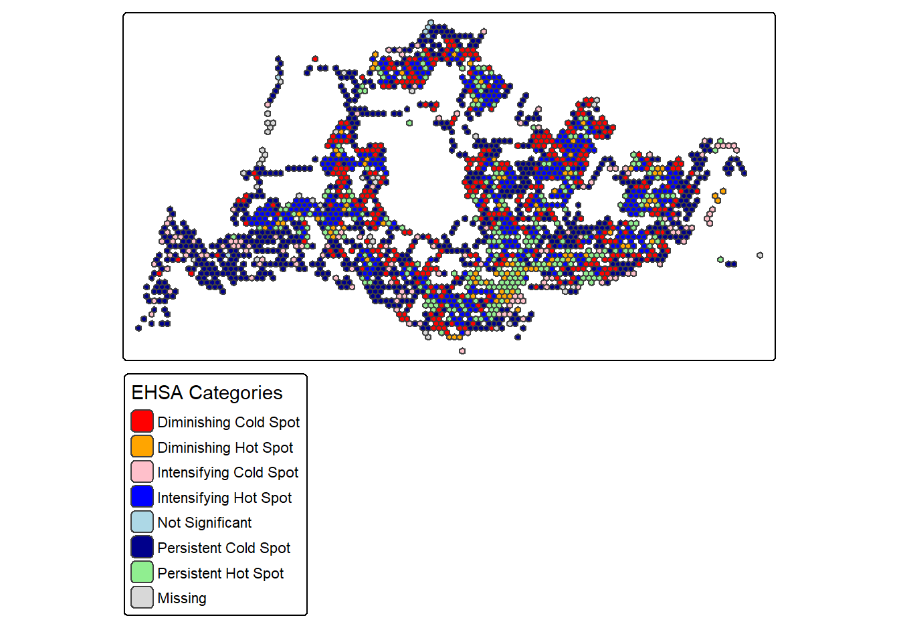
During the weekends/holiday (11am to 8pm), there are more change over time in each areas. We’ll discuss each categories’ meaning and what it means:
Diminishing coldspot: this means that the area is a coldspot 90% of the time, but it’s slowly decreasing. There are few areas all around Singapore with this trend, but it’s more clustered than weekday morning and afternoon. It is also interesting to see these areas are beside areas categorized as persistent cold spots.
Persistent coldspot: this means that this area is a coldspot 90% of the time, so there isn’t much change throughout different hours. Areas such as west region are much more clustered with persistent coldspot areas, which means that it’s more difficult to travel to or from west regions on the weekends or holidays since there’s not much buses that stops in those areas.
Intensifying hotspot: this means that this area is a hotspot 90% of the time but intensifies through time. Interestingly a lot of intensifying hot spot areas are very clustered during weekends than any other timings on the weekdays. This is also true for diminishing coldspots areas, they are more clustered during weekends or holidays.
Persistent hotspot: this means that this area is a hotspot 90% of the time, so there isn’t much change throughout different hours. Areas such as central areas have a lot of bus that pass by these areas during weekends or holidays, which means it is easier to travel since there are less wait time to ride a bus.